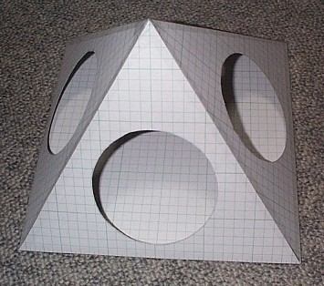
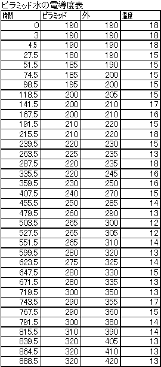
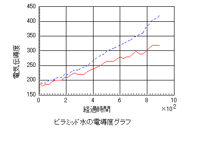

| 永遠の生命 | |
| 大和 武史 | |
| (2018) | |
古来から人々は不死にあこがれてきました。誰でも必ず、死ななくてはならないということで古代の王様などはミイラなどを作って不死を追い求めたようです。ところが、どんなに追い求めても、不死は手に入ることはありませんでした。それはそうです。生きている者はいつか必ず死ぬのです。人間は死の基に平等なのですから。
しかし、不死は決して手に入りませんが、不死と似ていて少し違うもの、永遠は話が別です。すなわち、永遠の生命はあるのです。この永遠の生命を、この大いなる福音を皆様に伝えるために､私は真理を説いています。
この本は、皆様を永遠の生命に誘うためのパンフレット的なものとして製作しました。幸福への招待状です。どうか、一読くださ。そして、もし内容に興味が湧くようであれば、あなたは真理に導かれているのだと思います。
果てしない銀河に輝く星々、黄金色の光や赤い光や青い光を発して恒星は悠久の時間を演出しています。宇宙は永遠の活動、人間には計り知れない無限の営みの場です。暗く青い宇宙に赤く広がった銀河や、無数の星の中に真っ黒なブラックホールを見ると私たちの生活とはかけ離れた永遠の時間を感じます。永遠はいつも宇宙の中に実在しています。
私たちの目に見える星の輝きは１万年も前の光であったり、遠い銀河の姿は数十億年も前の姿を見ているのです。光の速度を持ってしても数億年かかる距離など私たちには想像も及びません。無限の広がりの中に永遠は存在しているのです。
それに比べて私たち人間の命は何とはかないものでしょうか。長い人で百歳、短い人なら数年で死んでしまう、そんなはかない人生です。しかし、本当にそうでしょうか。たった数年～数十年で死んで消滅するようなそんなはかない生き物なのでしょうか、人間とは。
いや、実は私たち人間の人生、ごくふつうの人生にも永遠は存在しているのです。宇宙と同じ悠久の時間を生きる永遠の生命です。そしてこれは誰にでも、実は生まれたときから無条件に与えられています。私たち人間にはすべて永遠の生命があります。星と同じように何億年も生き通しの生命なのです。
もしも、本当に私たちが永遠の生命を持っているとしたら、どうでしょうか。これほど嬉しいことはないのではないでしょうか。死んでも消滅する命ではなくて、生き通しの命であったなら、死を怖がる必要はもうありません。死んでも生きているなら、思い切って生きることができます、強く、明るく。
しかし、そんなことがあるはずがないと思われる方も少なくないでしょう。永遠の生命など今まで聞いたことがないでしょうから。ましてや、自分がその永遠の生命を持っているなんて急に言われてもなかなか信じられないのではないでしょうか。
でも、本当に私たちが死んですぐ消滅する命であるなら、幽霊などの霊の話はすべて嘘になります。しかし、最近はよくテレビで心霊写真の特集をやっています。私のホームページにも霊の顔がはっきりと写った写真がありますけれど、これらをどう説明するのでしょうか。死んだらすべて消滅するなら死後、幽霊が現れるなんてあり得ないですね。あり得ないものがカメラに写るのはなぜなんでしょうか。また、葬式の時にお坊さんがお経を読んで成仏を祈りますが、これなんかはいったい何のためにやってるんでしょうか。同じように神社で神様に願掛けするのは全く意味のないことなのでしょうか。
こう考えてみるとひょっとしたら永遠の生命もあり得るかなという感じもするのではないでしょうか。実は本当にあるのです。私たちは星と同じように数億年間、生き続ける生命なのです。死んでも生き通しの命が、この世とあの世を生まれ変わっているのです。仏教で言う輪廻転生 です。私たちの命は、何度も何度も生まれ変わっている永遠の生命なのです。この事実をこの本であなたに知っていただくためにこの本を書くことにしました。
現代はあまりにも自己中心的な人が多すぎます。今の日本ならどこにでも見られるはずです。自分のことしか関心がない人達には、他人への奉仕などできるはずがありません。自分のことしか考えない人達には他人を思いやることなんてできるはずがありません。こんな人達が作る社会は必然的に冷たい、闘争と破壊の社会になってしまいます。
しかし、もし自分に永遠の生命があることを確信できたなら、その人達はやさしさや思いやりに目覚めるかもしれません。なぜなら、死んでも生きている命ならそれほどこの世の生に執着する必要がなくなりますから、精神的に余裕がでます。１回限りの人生なら自分が良い思いをしなければ気が済みませんが、何度もある人生ならそれほど執着する必要もなくなります。個人、個人がエゴを捨てることによって、社会が明るく変わる可能性があります。人々が永遠の生命を実感することによって現在の暗い、不安だらけの社会がよりよい方向へ変わるかもしれないのです。
それを願って、これから私たちの永遠の生命について詳しくお話ししていくことにしましょう。この本を契機に、あなたも自分に永遠の生命があることを実感していただけることを期待しています。
永遠の生命の話をする前に、まずエネルギーについて理解していただく必要があるでしょうね。エネルギーへの理解がこのテーマを説き明かすカギとなるからです。
エネルギーとは実に不思議なものです。エネルギーにはいろいろな種類があります。たとえば、電気エネルギーや熱エネルギー、原子力エネルギーなどがよく知られているエネルギーですが、これらのエネルギーにはふつうの物体とは違った性質があります。
それは、まず目に見えないということですね。エネルギーそのものが見える人は誰もいません。また、手で触ることもできませんし、音が聞こえるわけでもなく、舌で味わうこともできません。要するに、私たちの五感では感知できないということです。私たちにはエネルギーそのものを感知する事はできないのです。
しかし、感知できないからといってエネルギーが存在していないかというとそうではありません。たとえば、電気エネルギーは各家庭の電気コンセントの中にちゃんと存在しているわけです。それは、コンセントに電気機器などを繋いでスイッチを入れるとその電気機器が動くことからわかります。しかし、コンセントの中の電気エネルギーを直接感知できる人はいません。
このように私たちの五感では感知できないのがエネルギーですが、この他にも不思議な性質として、エネルギーが大きな力を持っているということが挙げられます。私たちの家庭では各種の機器が運動したり、照明を点灯したり、食品を温めたり、色々な活躍をしていますが、こうした働きは、実は何らかのエネルギーの力によるものがほとんどなのです。
たとえば、テレビやラジオなどの電気機器は電気エネルギーですね。これを利用してブラウン管などを作動させています。そして、電子レンジやガスコンロや電気コンロ、電磁調理器などは熱エネルギーを主として利用しているわけですね。ガスや電気によって熱を発生させて調理に利用しているのです。原子力発電などは原子力エネルギーですね、核分裂によって生じた原子力エネルギーを利用して発電を行っています。
また、私たちがよく利用している自動車は、ガソリンの爆発によって生じたエネルギーを各種の装置で車輪へ伝達して駆動させているわけですね。同じように、飛行機は航空燃料の燃焼によるエネルギーを利用して飛んでいます。このように例を挙げればきりがないですが、私たちが使用している機械はほとんどが何らかのエネルギーを利用したものである場合がほとんどです。それは、こうしたエネルギーが大きな力を発生する性質を利用しているわけです。
さて、このように不思議な性質を持っているエネルギーですが、このエネルギーはいったいどこに存在しているのでしょうか。ここで、わかりやすい例としてマッチ棒を考えてみましょう。ここに１本のマッチ棒があるとしましょう。このマッチ棒をマッチ箱にこするとマッチの先の硫黄の部分が発火して燃焼し、熱エネルギーと光エネルギーを発生します。これは、硫黄の燃焼ですが、これを科学風に解釈すると、硫黄が酸化してエネルギーを放出する現象です。化学式で書くと、
Ｓ ＋ Ｏ２ ＝ ＳＯ２ ＋ ｅ
となります。このｅがエネルギーでこの場合は硫黄が酸化することによって余分なエネルギーが放出されるわけですね。原理的には逆に、二酸化硫黄にエネルギーを加えると硫黄と酸素が生成されるはずですね。
このあたりは高校の化学で習ったと思いますが、問題はこのエネルギーですね、この式でいうｅというこのエネルギーがいったいどこに存在しているのかという問題です。式の左辺を見ていただくとわかると思いますが、どこにもｅはないですね。硫黄と酸素という物質があっただけです。これが燃焼によって、右辺に急にｅが出現したわけです。エネルギーが突然現れたわけです。
エネルギーというものはこういうものです。突如、何もないところから現れてくるのです。このように考えると、大変不思議な事ですね。いったいエネルギーはどこに存在しているんでしょうか。
この化学式が可逆式であるならば、つまり硫黄と酸素が燃焼して二酸化硫黄とエネルギーに変わることも、二酸化硫黄にエネルギーを加えると硫黄と酸素に分かれることも可能であるならば、エネルギーであるｅは現れたり、消えたりできるものであるはずですね。現れたかと思えば忽然と消える、そうしたものであるはずです。
すると、答えとしては二つしかないと思います。一つはエネルギーがそれ自体で生成と消滅を繰り返すという考え方と、もう一つは別の空間からこちらへ現れたり、向こうへ消えたりするという考え方です。
最初の考え方の、エネルギーがそれ自体で生成と消滅を繰り返すという考え方がもし正しいとするならば、この世の空間にはエネルギーの保存則が成り立たなくなってしまいます。この世ではエネルギーの保存の法則が働いていて、さきほどの化学式においても硫黄と酸素の持っているエネルギー量と二酸化硫黄のエネルギー量の差がエネルギーとして放出されただけでトータルでは総エネルギー量は変わっていないのです。
ところが、エネルギーがそれ自体で生成と消滅をするならば、生成されたとたんに総エネルギー量はその分増えてしまいますし、消滅したとたんにその分消えてしまうことになります。エネルギー保存則というのは、元々エネルギーの総量は不変だということですね。だから、もしある量のエネルギーが新しく生成されるなら同じ量のエネルギーが消滅していなければトータル量は同じになりません。これでは結局、プラスマイナスゼロです。無意味ですね。ですから、この説は間違いであるはずです。
それでは、二つ目の仮説である、別の空間から現れたり隠れたりするという考え方について検討してみましょう。
これは一見、先ほどの考え方とよく似ているように思えますが、似ても非なるものです。先ほどの考え方ではこの世の空間において急に生成されたり、消滅するという考え方であったわけですが、こちらはエネルギー自体がもともと、別の空間に存在していて必要があるときに必要なだけこの世の空間に現れるという考え方なのです。つまり、先ほどの硫黄の燃焼の化学式でいうと、左辺の状態ではすべて別の空間にエネルギーがあるわけです。この世の空間には硫黄と酸素分子が存在するだけです。しかし、燃焼によって右辺のように二酸化硫黄とその差分だけのエネルギーが別の空間から呼び込まれてくるわけです。そして左辺と右辺がイコールになるようになっているということです。
逆に言うと、この世の空間において総エネルギーが保存されるように、あらゆる化学変化において別空間のエネルギーが即座に補給されるようになっているという考え方です。この考え方ではエネルギーの収支が必ず一定に保たれるという事が前提になります。このために必要なエネルギーが別空間から即座に補給され、逆に余分なエネルギーは別空間へ消えていくわけです。
こう考えると、各種のエネルギー変化がうまく説明できるのです。そして、結果もエネルギーの保存則に従いますから不都合はありません。しかし、エネルギーが存在する別空間とは本当にあるのでしょうか。そして、どこに存在するのでしょうか。
もし、この別空間が存在しているとすれば、この空間からエネルギーが補給されるわけですから、先ほどの硫黄の燃焼でいうと硫黄が燃焼するところはどこでもこの別空間が存在していなければなりません。少なくとも地球上で、硫黄が燃焼しないところはありませんから、この別空間は地球上のどこにでも存在していなければならなくなります。また、宇宙空間においても酸素と硫黄さえあれば燃焼されますから、この別空間は宇宙中に存在していることになります。つまり、この世の三次元空間とすっぽり同じだけ存在していなければならないのです。もし、この別空間が存在していないところがあれば、そこではエネルギーの補給が行われませんから、エネルギーの保存則が成立しなくなってしまいます。今の私たちが知る限りでは、エネルギーの保存則が成立しない空間などありません。
このことから、このエネルギーの存在する別空間はこの世の三次元空間と重なり合っていると考えられます。同じ空間に共存していると言った方がわかりやすいかもしれませんね。そして、硫黄の燃焼式の左辺のところに酸素分子と硫黄がありますが、これと右辺の二酸化硫黄と差分のエネルギーが等しいと言うことは、酸素分子や硫黄や二酸化硫黄もある一定のエネルギーを内部に持っていると言うことに他なりません。硫黄と酸素分子の内部エネルギーと二酸化硫黄の内部エネルギーの差がｅというエネルギーとして出てきたということです。
つまり、硫黄も酸素分子も、そしてその他の分子もすべてその内部にエネルギーを持っているわけです。物質にはすべて内部エネルギーが存在しているということです。これは物質として存在するためのエネルギーです。
そして、この内部エネルギーがすべての物質にあるということは、すべての物質にはエネルギーが共存しているということでもあるのです。物質に対して一定量のエネルギーが共存して存在しているのです。ですから、すべての物質はエネルギーの保存則に従うことになります。もちろん、この例のマッチ棒も例外ではありません。
これがエネルギーとこの世の物質の関係です。すべての物質はエネルギーとの共同体です。そうでないと存在できないのです。
前節では、エネルギーがこの世の空間と同居しながら、別空間に存在しているという結論になりましたが、その別空間とはどのような空間なのでしょうか。
その答えが異次元空間です。その前に次元という考え方を整理してみましょう。次元というのは、そのところをいくつの要素でもって規定しているかという指標です。たとえば、１次元とは線分ですね。ここに存在するものは線としての存在だけで他との区別はその長さ以外にありません。長いか短いかが他と区別する指標です。
次に、２次元とはＸ軸とＹ軸で規定される面です。ここでは、線分の長さに加えて横の広がりが加わります。単に長さだけではなく、幅広さが指標に加わったわけです。他との区別は、広さですね。Ｘ軸とＹ軸方向への広がり具合です。
そして、現在の私たちが生存している３次元空間です。ここでは、先ほどのＸ軸とＹ軸に加えてＺ軸が加わります。つまり、立体です。単なる面ではなく、奥行きを持つ立体となるのです。他との区別は、２次元の広さに加えて奥行きを伴った立体としての大きさ、形がその指標となります。
以上が次元という考え方の概略ですが、この私たちが住んでいる３次元空間以外の空間にエネルギーが存在している事になるのです。この空間はこの世の３次元空間以外に存在するので、異次元空間と呼ぶことにしましょう。しかし、先ほど説明したように１次元や２次元ではあり得ないですね。なぜなら、３次元空間とすっぽり同じ空間に同居する必要があるからです。１次元や２次元では空間の広がりがないのでこれは不可能だからです。
ですから、このエネルギーが存在する異次元空間は少なくとも４次元以上の空間であるはずです。これを４次元空間とすれば、その次元を構成する要素が一つ多いわけですね。何の要素が増えるのかというと実は、これが時間の要素なのです。４次元空間というのは、３次元のＸ軸とＹ軸とＺ軸に加えて、時間の要素が加わるのです。
つまり、私たちが住む３次元空間には時間の要素がありませんから、すべての物体は同じ時間に存在します。何時何分何秒という、存在している時間はすべての物体が同じです。つまり、今しかないのです。過去とは既に過ぎ去った時間であり、未来とはまだ来ぬ時間なのです。存在が許されるのは今だけです。これが３次元空間の特徴です。
しかし、４次元空間になるとこの事情は大きく変わります。時間をその存在要素に持つということは、それぞれの物体が固有の時間に存在しているということです。全く同じ立体構造を持つ物体があっても、その存在している時間が違えば別の物体なのですね。３次元の縦、横、高さで規定される立体の形に加えて、いつの時間に存在しているのかという指標が加わるわけです。３次元的にいえば、過去にも未来にも存在することができます。
エネルギーの次元は少なくとも４次元以降の存在です。なぜなら、エネルギーにはこの世の時間が適用されないからです。つまり、私たちが住むこの世の３次元空間には時間の要素がありませんから、自分固有の時間を生きることは不可能です。誰でも、必ず同じ時間に存在しており、誕生・成長・老化・死というプロセスをたどります。これには例外はなく、誰でも、どんなものでもいつかは老朽化し、死の時、消滅の時を迎えます。
しかし、エネルギーはこのプロセスを経ないのです。エネルギーはいつも同じエネルギーであり、同じ力を持ち、瞬時に現れ、瞬時に消えていきます。こうしたことが可能であること自体が、この３次元空間の強制的な時間の流れの束縛を受けていない証拠です。エネルギーは誕生することも、成長することも、衰えることも、消滅することもないのです。こうしたことがあってしまうとエネルギー量が変化してしまいますから、エネルギーの保存の法則から外れてしまうからです。だから、あるエネルギーはいつも同じ強さでその存在が必要な限り存在していなければならないのです。これができるのは３次元空間に存在するものでは不可能なのですね。４次元の時間を要素に持つ存在でなければ、理論的に不可能です。
だから、エネルギーは４次元以降の高次元存在です。また、エネルギーの存在する空間は四次元以降の異次元空間です。そして、その異次元空間はこの私たちが存在している３次元空間にぴったりと重なって存在しています。３次元空間に存在するすべての物体は、３次元空間の物質と異次元空間のエネルギーとが合体してできています。これが、物体とエネルギーとの関係です。
今までのことから、物体とエネルギーの関係がわかったと思います。私たちが普段、何気なく扱っている物や見ている景色などはすべてその内部にエネルギーを持っています。逆に言うと、エネルギーがないと存在していることができないのです。
しかし、普通はこの３次元空間では、前にも言ったとおり、誕生、成長、老化、死滅というプロセスを必ずたどることになりますが、これはエネルギーの観点から見るとどういうことなのでしょうか。
特に問題となるのが、誕生でしょうね。人間などが誕生するということは、エネルギーの保存則から言えばおかしいことではないのでしょうか。誕生した分だけ、エネルギーが増加しているのではないのでしょうか。これについて考えるにあたり、この３次元空間においては必ずエネルギー保存の法則が成立するということを大前提として考えます。そうでないと、すべてのものが曖昧になってしまい、法則性を見いだすことができなくなるからです。
エネルギー保存則の成立を前提に、誕生を考えますと、誕生によって生み出されるだけの物体のエネルギーをどこか他から流用してきたと考えるしかないですね。硫黄の化学変化のように、酸素分子と硫黄から二酸化硫黄とエネルギーを取り出したように、物体の変化によってその分の必要なエネルギーを取り出す以外に方法はありません。
では、具体的に人間の赤ちゃんが産まれるにはそのエネルギーはどこからどのように取り出されているのでしょうか。こう考えると、赤ちゃんは母親の子宮で誕生しますから、子宮からエネルギーを受け取ると考えるのがもっとも妥当でしょう。すると、母親の卵子ですね、これに性交によって精子が結合したときに、細胞分裂が始まって、卵が成長していき、やがて赤ちゃんになっていくわけですが、このステップに必要なエネルギーを母親の胎内から得ているはずです。
そして、その得たエネルギーの分だけ何かのエネルギーが減少しているはずですね。そうでないとエネルギー保存則が成立しませんから。こう考えると、エネルギーの供給源はやはり毎日の食事ですね。これがエネルギーの供給源です。
妊婦に限らず、私たち人間は誰でも必ず食事をします。食物によってエネルギーを補給しないと生きていけないのですね。なぜか、それは細胞は日々死滅し、また新しく生成されているからですね。私たちの体には何十億という数の細胞がありますが、これらは絶えず死滅しては生成されて生まれ変わっているんです。これに膨大なエネルギーを必要とします。
もちろん、細胞を死滅させているのは別の原因だと思います。これはおそらくこの３次元空間を貫いている法則によるものです。すべての物は必ず死に向かいます。おそらく、私たちには感じることもできませんが、この３次元空間全体にマイナスのエネルギーが充満しているのでしょうね。そして、このエネルギーに毎日必ず少しずつエネルギーを吸い取られているのでしょう。このエネルギーが減少していくことが死滅への法則性に結びついているのだと思います。ただ、ここのところは、あくまでも私の推定です。現時点では十分な根拠もないので参考程度に聞いておいていただきたいと思います。
いずれにしても、枯死へ向かわざるを得ない宿命を背負った３次元の肉体はその日々死滅していく細胞を新しく生成するために膨大なエネルギーを必要とするわけです。そして、それを主として毎日の食事から摂取します。毎日、私たちは色々な物を食べます。
ご飯とか、豚カツ、ハンバーグ、みそ汁、納豆、卵焼きなど考えるだけでもおなかがすいてくる人もいるかもしれませんね。こうした食事から、タンパク質とか、炭水化物、ビタミン、ミネラルなどを摂取して私たちの体が維持されていると習っていると思います。これは実際、そのとおりですが、これをエネルギー収支的に考えると、摂取した食物は消化器官を経て各種の栄養素に変わるわけですが、このときに膨大なエネルギーの変換が行われているんです。
自分でそれを意識している人はまずいないでしょうが、私たちの体はエネルギーの変換炉でもあるのです。食べた物と排泄された物を比べれば、その差がどれほどあるかは簡単にわかっていただけると思いますが、それはエネルギー収支においてもいえることで、膨大なエネルギーが消化によって人体に取り込まれているのです。
そして、これらのエネルギーが細胞を生成するためのエネルギーとして使用されるわけですね。ですから、この人体を維持する仕組みに加えて妊婦の場合には、赤ちゃんを作り出すためのエネルギーを摂取する必要があるわけです。当然、食物の摂取量は増えざるを得ませんね。そうでないと、エネルギー量が不足してしまいます。
いずれにしても、こうした食物からエネルギーを摂取する仕組みから赤ちゃんの誕生するエネルギーを捻出しているわけです。でも、これらのメカニズムはエネルギーの交換システムですね。新しく生み出しているわけではなく、既存の食物を体内で変換してエネルギーを抽出しているのです。ですから、この誕生においてもエネルギー保存則は成立していると言えるでしょう。
このように、エネルギー収支的に存在の問題を考えると、この世の３次元空間に存在するということは、他のエネルギーを自らの生存のために利用して代替させているということなのです。生きていくために食物を食べることが必要な理由は、エネルギーの補給が必要だからです。補給しなければ、エネルギーは不足してしまって死に至るのです。
それでは、弱肉強食の世界、動物の世界ではこれはどうなっているのでしょうか。動物も自分の体を維持していくために食物を食べることが必要です。そのために、小さなものは大きなものの餌になり、大きなものは餌が不足するとやがて死に、微生物に分解されて植物の栄養になります。その栄養で育った植物を草食獣が食べて育ちます。その草食獣を肉食獣が食べて育ちます。その肉食獣ももっと大きな肉食獣に食べられます。そして、その大きな肉食獣も死ねば、また土に返っていきます。
このような食物連鎖が自然にはできあがっています。これらは、明らかに生態系の中で連鎖するようにあるものは次のものの餌となり、そのものもやがて元なるものに返っていくという循環の姿ですね。これを表現しています。循環こそ、自然の摂理なんです。エネルギーの保存の法則というのはこれを微視的に眺めただけです。大きな目で眺めれば、エネルギーはある系の中で循環しているのです。だから当然、総量は保存されているのです。すべてのものは、エネルギー的には総量を変えないまま循環しています。それゆえ、この世に存在しているものは皆、何らかの犠牲のおかげで生きていけるのです。
生きていくためには常にエネルギーが必要だからです。それを補給しなければ生きていけないから、人間であれば、植物や動物の犠牲のおかげで生きていられるわけです。私たちが食べているものはすべて何らかの生あるものであったのです。生物を犠牲にすることによって生存が可能になっているわけです。このためにはやむを得ないのです。これが３次元空間に生きる宿命です。
自然界は生命の宝庫です。プランクトンのような微生物から鯨のように巨大な生物まで多種多様な生物が生息していますが、これらはすべて自分で意志を持って独自の活動をしています。そして、ほ乳類などの高等な種になると自分で考えて行動をします。人間はさらに高等で自ら考えて行動し、その結果で学習し成長することもできます。
人間は今、ロボットの制作にいそしんでいますが、これらのロボットはプログラムしたとおりに動くだけで、自分で意志を持つところまではとてもいきません。また、体にしても鋼鉄製で融通が利かず、柔らかでありながら十分に強固な肉体のような体を作り上げることなどとても現時点では無理です。
生命は神が作った傑作としか、私には表現できないのです。このような生命ですが、この生命とエネルギーとはいったいどのような関係になっているのでしょうか。
その前に、生命の働きを人間について一度じっくりと考えてみることにしましょう。私たち人間は例外なく、母親から生まれます。母親から生まれたときには２０００ｇ～４０００ｇ程の重さでまだ目も見えず泣くだけの赤ん坊ですが、ミルクを飲み、どんどんと大きくなっていきます。このころにはもう内臓はちゃんと機能していて、口から飲んだミルクを消化器官で消化して栄養を体内に取り込んで老廃物を排泄しながら成長していきます。
その過程で、前に言ったように食物から膨大なエネルギーを抽出して、細胞を新しく作り替えながら大きくなっていくのです。その過程にははっきりとした筋書きがあります。親からの遺伝や環境の影響を受けて独自の体を形成していくのですが、その情報はＤＮＡに納められていると言われています。ＤＮＡに書き込まれた遺伝情報のとおりに成長していくということです。そして、私たちが意志を持つのは脳の働きによるそうです。
脳で考え、ＤＮＡで決められたとおりに成長していく一種のロボットのように考えられているのが現代の人間観です。現在の思想では、動物とは自ら動くことができる物体であって、それは脳の発育によるおかげです。この動物の中でもっとも高度の進化しているのが人間なのです。
しかし、本当にそうでしょうか。私たち人間は、高度に進化したただの動物でしょうか。それだけの存在なのでしょうか。確かにＤＮＡに遺伝情報が納められ、そのとおりに体はできていくのでしょう。また、脳で各種の神経からの感覚を受け取り、色々な記憶を整理して考えていると思いますが、脳そのもので私たちは考えているのでしょうか。つまり、肉体にある器官だけが私たち人間でしょうか。
いや、そうではありません。この３次元空間に存在するものは皆、内部にエネルギーが必要なのです。私たちの肉体も例外ではありません。その存在には、内部エネルギーが必要となります。本当は肉体とエネルギーが同居して存在しているのです。この肉体と同居しているところのエネルギーについてこれから考えてみることにしましょう。
これまでの内部エネルギーの話は生物ではない普通の物体について論じてきました。そして、３次元空間に存在する物体はすべて内部エネルギーを持っていると述べましたが、これはもちろん、生物についても当てはまります。生物と言えども物体の複合体ですから、それぞれの物体が存在するために内部エネルギーが必要なら、生物自身も内部エネルギーは当然必要なことになります。
問題は、生物は存在するだけでは済まないということです。つまり、自主性を持って自分で活動する必要があるからです。この自力で活動できるという特徴はいったいどこから生じてきているのでしょうか。
私たち人間が作るもの、車や家や飛行機やロボットなどは皆、材料を加工して作ったものです。それらは私たちの生活には大変に便利なものではありますが、自力で活動することはありません。人間が運転したり、燃料が必要であったり、自然に生きている生物とは大きく違います。人間が作ったこれらの機械を論じるには内部エネルギーだけでよいのですが、実は、生物にはこれらにはない高等なエネルギーが存在しているのです。
たとえば、人間について考えてみましょう。私たち人間の体は心臓が血液を体中に送るポンプの役割をし、その送られた血液が酸素を組織へ送り、逆に老廃物を受け取り、細胞を活性化させています。また、口から摂取された食物は消化器官で消化され、吸収された栄養やブドウ糖などは各種の器官を経て筋肉や骨などを作っています。また、脳は色々な神経からの情報を整理、解析し、大脳に伝えて、逆に人間の思考を手や足などの各種の神経へ伝達し、自由に動かしています。このような働きが自由に行える結果、私たち人間は自分の意志で様々な活動をしていけるわけです。
これらの働きの動力源はいったいどこから来るのでしょうか。たとえば、心臓を動かす動力は何でしょうか。なぜ心臓は動いているのでしょう。この素朴な疑問に現代医学は答えているでしょうか。ただ単に、心臓は動いて血液を送り出しているとしか答えていないのではないでしょうか。心臓が動くのはそんなに当たり前のことですか。
心臓移植で心停止した人の心臓を別の人に移植した場合を考えてみましょう。心臓を提供した人は脳死か、少なくとも心停止している人ですから、もう二度と心臓は動かないはずですね。その人の体の中では。しかし、その動かないはずの心臓を別の人に移植したらまたその心臓は動き出すのです。これは、心臓そのものに動く力があるのではなく、体の方にそれを動かす力があるということに他なりません。提供者はもう死につつあるので、心臓を動かす力が失われているのですが、被提供者、心臓移植を受ける人の方はさっきまで生きていた人ですが、心臓が悪いので今の悪い心臓を切り取って提供された心臓に換えただけですね。その換えた心臓がまた動き出すということは、心臓を動かす動力にあたる力は心臓そのものの中にあるのではなく、体の方にあって、その力が心臓を動かしているということです。
これは、心臓に限らず他の臓器についても言えます。各種の臓器を動かす力は体の中に存在しているのです。しかし、この力の発生場所は体中をくまなく探しても、どこにも見つけることはできません。どこにも、臓器を動かす力のあるようなものはないのです。
では、いったい、何が臓器を動かす力になっているのでしょうか。それが、ここでお話しするところの生命エネルギーなのです。生物には物体にはない、もっと高度なエネルギーである、生命エネルギーを持っているのです。逆に言うと、生命エネルギーを持つものが生命なのですね。そして、その生命でかつ、自力で活動できる体を持つものを生物と呼んでいるわけです。
生命エネルギーとは、生体の臓器を動かしている力であり、細胞などを活動させている力です。このエネルギーがなければ、決して物体以上のものになることなどあり得ません。それは、人間が作るものがすべて物体を越えることができないことからわかるはずです。生命そのものを作ることは私たちの現在の科学では無理ですね。なぜなら、生命エネルギーについてまだ全くわかっていないからです。この分野の研究が遅れているのです。
心臓一つをとってみても、それがまず体温を保持しているということ、なま暖かいですね、この温度を細胞レベルで保持しているということは内部にそれだけのエネルギーがあるということであり、またそれが大きく動いてポンプのように血液を送り出しているということ、この活動に必要な動力になるだけのエネルギーを内部に蓄積しているということです。それも何十年という長い間において絶えず動き続けるだけのエネルギーをです。これらのエネルギーは膨大なエネルギーになります。人間一人を何十年か生き続けさせるのに必要なエネルギー量は膨大なものが必要なのです。そんな膨大なエネルギーは偶然に発生したりはしません。
人間をはじめとする各種の生命には、ＤＮＡにその遺伝情報が前もって書かれているように、その生命を維持していくのに必要な生命エネルギーをもともと持っています。ですから、生命とは、３次元空間にある体とその内部エネルギーと生命エネルギーの３つが合体したものです。この３つが全部そろわないと生命にはならないのです。これが、生命とエネルギーの関係です。
生命エネルギーとは、実に不思議なものです。生きているということはその中に生命が宿っているということですが、それはその名のとおり生命エネルギーが宿っているということなのです。生命エネルギーもエネルギーの一種ですから私たちの五感では感じることはできません。その存在の可否はその物体が自らの意志を持ち行動できるかどうかということによります。自ら意志を持ち行動できるエネルギーこそ生命エネルギーなのです。
しかし、生命エネルギーにも色々種類があります。先ほどの例で説明した心臓などの臓器を動かすのも生命エネルギーの一種ですが、これ以外にもたとえば、アメーバーのような単細胞生物を生きさせているエネルギーも生命エネルギーです。アメーバーも自分で運動をし、餌を捕食して生きていますが、この働きはこのアメーバーの中に宿る生命エネルギーの意識によるわけです。同じように他の単細胞生物や、もっと複雑な、たとえば魚類やは虫類、両生類などの生物もそれぞれ、独自の特徴ある行動を起こし、餌を取って生きていますが、これらの活動の源泉もこの生命エネルギーに他なりません。
生物はこのように多様な種類があり、独自の行動様式を呈して生きていますが、これらの違いはいったいどこから来るのでしょうか。現代は、脳の大きさや皺の多さなどのせいだと言われていますが、これはおかしいですね。脳の大きさだけなら、猿よりも象などの方が大きいですし、皺が多いからと言って知性が高いとはとても思えませんね。皺が一番多いのは老人でしょうが、一番知能が発達しているのは３０代くらいではないでしょうか。いずれにしても、脳の大きさや形状によって決まるものではなく、生体に宿る生命エネルギーの特徴によって決まるものなのです。
生命エネルギー量が多ければ少ないよりは行動力があります。行動を起こそうとする力が強いですから、当然ですね。そして、その生命エネルギーにも種類が色々とあって、分かりやすく言えば光の種類に似ています。光は普通、私たちの目には黄色い明るい光にしか見えませんが、プリズムを通して光を見てみると、不思議なことに七色に分光されて見えます。赤から紫までに黄色や青、緑などの光があってこれらの光が束ねられて白い光となっているわけです。そして、このそれぞれの光は微妙に波長が違うわけですね。波長が違うから屈折率が違ってプリズムで分光して見えるわけです。波長の違う光は、性質を異にします。単に色が違うだけではなく、たとえば赤色の外には赤外線がありますが、これは熱線です。熱を放射する性質が強い光線です。また、逆に紫の外には紫外線があり、これは変質を起こさせるような作用が強い光線です。このように波長の違いはその光の性質の違いに他なりません。
光とは多くの特徴ある光線を束ねたものであり、その個々の光線は独自の特性を持っており、波長を分けることにより、ある部分だけを取り出すことができます。たとえば、私たちがよく利用している電波ですね。長波、中波はラジオ放送などに利用されており、あまり遠くへは飛びませんが安定しています。短波は船舶無線などに利用され電離層に反射して遠方までよく飛ぶ性質があります。また、超短波は電離層を突き抜けてしまいますが、周りの影響を受けにくい電波です。このような電波はテレビやラジオ放送などに広く利用されており、私たちがもっとも身近に感じる波長でしょう。この電磁波の領域を越えると光の領域に入り、先ほど説明した可視光線や赤外線、紫外線、Ｘ線などがよく知られています。
宇宙にはこうした電磁波や可視光線や見知らぬ宇宙線がいっぱい降り注いでいます。私たちの地球上ではオゾン層が有害な宇宙線を除去してくれているので限られた範囲の光線しか届いていませんが、宇宙にはありとあらゆる光線が絶えず降り注いでいるのです。こうした宇宙に降り注いでいる光線を生命エネルギーと思っていただくと理解が早いと思います。宇宙空間に降り注いでいるありとあらゆる種類の光線の束が生命エネルギーの本質です。その中のごく一部分だけが生物に宿るわけです。その宿った生命エネルギーの種類と量により生物は特徴ある傾向性を持つわけです。
たとえば、生命エネルギーを可視光線にたとえて、可視光線を例に説明するとしますと、赤の光に勇敢さ、どう猛さを持っているとしましょう。これを少しだけ、は虫類の蛇に宿すとしますと、蛇はどう猛な性質を帯びた行動をとるようになります。そして、そのＤＮＡには蛇としての体の構造ができていますので、獲物にかみついたり、蛙を飲み込んだり、どう猛な生態を演じるわけですね。この同じ赤色の光をほ乳類のライオンに宿してみると、獲物を追いかけたり、弱肉強食の世界が展開されるわけですね。しかし、蛇に宿っている光の量とライオンに宿っている光の量ではかなりの違いがありますね。蛇には水牛を追いかけて倒すほどのパワーは出ませんから。
同様に、紫の光が臆病さやおとなしさを示す光だとしましょう。これをネズミなどに宿らせますとあのように、人を見るとすぐに逃げるネズミ特有の行動様式になりますね。また、これを草食動物に宿らせると穏健な性格の動物ができます。敵が来るとすぐに逃げますが、紫の光の量はネズミなどよりはずっと多いはずですね。生命エネルギーに色があるわけではないのですが、私たちに分かりやすい比喩で説明するとこのような感じになります。
多種多様な生命エネルギーの束の中からその生命を特徴づける部分を受け持って生命は誕生します。そして、体の働きを受け持つ意識と共同で生体を維持しつつ、独自の傾向性を発現して生きるのです。これが生命です。もちろん、これを証明する証拠など現時点においてはあるはずがありません。まだ、エネルギーそのものにさえ、十分に目を向けられていないのですから。生命エネルギーを証明できるのはずっと先のことになるでしょうが、現在、唱えられている脳の大きさや皺の多少による差の理論よりはよっぽど納得がいくのではないでしょうか。
生物とは生命エネルギーの種類によってその傾向性が特徴づけられているという話をしましたが、では、考えるということ、意識ということはいったいどういうことなのでしょうか。私たちは、毎日何かを考えていますね。そして、何かを決断して、何らかの行動を起こします。ある人は怒りっぽく、他人に攻撃的ですし、またある人はやさしく、他人に思いやりがあります。このような性格の違いはどこから来るのでしょうか。
生物の傾向性を規定するものは生命エネルギーの種類と量でしたが、その種類は決して１種類ではありません。単細胞生物のような単純な生命ならいざ知らず、ほ乳類などの高等生物になるといくつかの種類の生命エネルギーを同時に持っています。というより、いくらかの波長の幅を持った生命エネルギーを宿しています。光でいうと、黄色からピンクまでとか、そういう感じです。特に人間については、可視光線の範囲すべてという感じでかなり広い範囲をカバーする生命エネルギーです。
広い範囲を持っているということは、色々な属性を共有しているということです。たとえば、ずるさなどの精神的な特徴や明るさ、ねばり強さややさしさなど色々な精神的な特徴がありますが、人間にそれらの特徴を表す人が現実にいるということは、それらの特徴づけられたエネルギーを元々持っているということです。その中でその部分を強く発揮しているに過ぎません。元々持っていないものは決して発揮することはできないからです。ですから、たとえば、蛇などのは虫類に優しく、明るくなれと言っても無理ですね。元々彼らには、そんな性質のエネルギーを持っていないからです。その点、犬や猿などはかなり人間に近い動物です。彼らは持っているエネルギーの範囲が広く色々な特徴を表すことが可能なのです。喜怒哀楽もそれなりに表現することができます。
エネルギーの種類が多様であるということは、それだけ色々な可能性を持っているということです。あるエネルギーではＡという答えしかないけれど、別のエネルギーにはＢという答えがあるということで、選択肢が増えるのですね。自分の行動パターンが多いのです。ある一つの事象が発現したときに、それへの反応の仕方は１種類のエネルギーしかなければ一つしかあり得ません。たとえば、餌を見れば何も考えずにすぐに食べます。
しかし、多様なエネルギーを持っていますと、色々な答えがあるわけで、この場合はどれにするか選択する必要が生じるわけです。実際にとる行動は一つしかないですから、多くの可能性の中から一つを選択するという事が必要になります。これが考えるということの原始的形態です。選ぶためには考える必要があります。考えた結果、その答えに合わせた行動を自分で制御して行うということが発生するわけです。これが意志ですね。何か目的を持って自ら行動することです。
実際にはほとんどの動物が意志を持っています。なぜなら、彼らには色々な選択肢があるからです。餌を探し回ることから昼寝することまで自由に行うことができるのですから、今何をするかを選択する必要があり、意志を持たざるを得ないわけですね。ただ、下等動物である彼らの意志は、ほとんどが現在に関する意志だけです。今どうするかは意志で決められるのですが、過去や未来を考えて今どうするかを決めるところまでは無理です。この辺は確かに脳が小さく記憶量が少ないこととも関連があるのかもしれません。
犬などの高等動物になると過去の経験に照らして現在の行動を決めることが可能になります。たとえば、飼い主のしつけの結果、「待て」と言われた犬はたとえ餌が目の前にあってもじっと待っていることがあります。これなどは学習の結果、過去の記憶によって現在の行動を制御しているわけであり、また言うことを聞かなければ飼い主に怒られると言う未来をも予想しているわけですね。時系列的な考え方ができてきているわけです。
このような状態からは単に意志を持つというより意識があるという表現の方がふさわしいと思います。色々な情報によって自らの行動をよりよい方へ制御していく力こそ、意識の力です。これは、すべての生命にあるわけではなく、高等な生物特有の性質です。
地球上で意識がもっとも発達しているのが人間です。人間は生まれたばかりの赤ちゃんの時からすでに意識を持っており、喜怒哀楽に応じた反応をします。そして、成長し、幼年期に達すると言葉や態度で自分の意志を表現するようになります。こうしたことは人間以外の動物には無理なことです。
そして、人間はさらに成長すると、読書やその他様々な影響から自分独自の考え方を持つようになります。そして、それによって無意識に自分をコントロールする動きが生じてきます。これが傾向性です。自分独自の考え方や感じ方、行動の仕方というものを持つようになってくるのです。こうしたいくつかの傾向性を総合的に表現する言葉が性格です。個々の人間の性格は、結局、意識の作用から生じてきているわけです。意識はオリジナルの生命エネルギーによりますから、自分の性格と全く同じ性格をしている人間は世界中どこを探してもいません。完全なオリジナルですね。
なぜなら、もとなる生命エネルギーの束の構成の仕方や様子が皆、違うからです。というよりも、同じものはあり得ないのです。プリズムで分けた光は違うものに分かれざるを得ないので同じものは作ることができないのです。元々一つであったものを分割すると分割した一片一片は必ず違うものにならざるを得ません。違うものですが、しかし、どれもこれも元々の全体の中の一片です。
だから、人間とは意識そのものだということもできるのですね。肉体のことではなく、その中に宿っている意識こそ人間の本質であるわけです。これが、かつてギリシア哲学で唱えられた「イデア」です。人間の本質は意識であるわけですが、人間の中にあって永遠不変の実在のことです。近年においてはその意味がよく理解できずに曲解されているようですが、当時の哲学者のプラトンたちは、永遠不変の実在の存在に気づいていたのですね。そしてこれをイデアと呼んだわけです。ここで私が言っている意識と同じものです。人間の本質であり、死んでなお不変の実在のことです。
さて、これまでに生命エネルギーから人間の本質ができているという話をしてきました。そして、人間は地球上でもっとも高度な生命エネルギー体である意識そのものであるという事も言ってきましたが、初めてこの本を読まれた読者の方にはまだまだ納得がいかないのではないでしょうか。私の話が少し先を急ぎすぎているせいもあると思いますが、なかなか完全には納得がいかないのが大半の方であろうと思います。半信半疑というところではないでしょうか。
ここまでの理解がこの本のキーポイントになりますので、ここで現在の私たちが今までに学んできた科学では取り扱っていない、四次元的なエネルギーである生命エネルギーの存在の可否についてもう一度違う角度から検討してみましょう。そして、その真偽を可能な限り明らかにしてみましょう。
これまでの話が信じられない方は、四次元的なエネルギーの存在そのものを信じられないということであろうと思います。私たちが普段接しているものに内部エネルギーがあることは認めるでしょうが、そうした物理的なエネルギーと生命エネルギーは少し趣を異にするエネルギーであり、無理矢理こじつけているように聞こえないでもありません。そこで、これからこうした現在の科学では全く盲点のエネルギーが現実に存在しているという証を調べてみることにしましょう。生命エネルギーそのものを検証することは現時点の科学技術では無理ですので、類似の摩訶不思議なエネルギーが現に存在しているという証をすれば、少なくとも生命エネルギーなどの不思議な話など問題外だとする主張は通らなくなりますね。少なくとも、同じように生命エネルギーもあり得るという可能性は否定できなくなるはずですね。
四次元的なエネルギーとここでは呼びますが、これの意味は現在私たちが認識し、確認している三次元で取り扱っていない未知のエネルギーという意味です。必ずしもふさわしい表現ではありませんが、一般の方にニュアンスが分かりやすいのでこの四次元的なエネルギーという表現を使用することにします。さて、その四次元的なエネルギーの存在についてですが、これをどのように証明するかですが、やはり現在の科学で納得しやすいのはこれまでのような理論ではなく、実験結果ではないでしょうか。
理論では、騙されるということがありますし、間違っていても気がつかないこともあります。しかし、客観的な実験結果は万人を納得させる事も可能です。実験には作為が通じないし、真実に即した結果が必ず現れるからですね。また何度も追体験する事もできますから他の人達が確認することもできます。非常に客観的な証明手段であると私は思います。ただし、実験する以上、制約があります。その命題が実験という手段に置き換えられる必要があります。実験方法や実験器具や測定機器の精度などの問題がついて回ります。正しい実験方法で、十分な精度を有する実験器具や測定機器を用いて、正確に実験を繰り返さないと意味がないのです。こうしたことが現時点において可能であるという前提があるのです。
この意味では、まだ四次元的なエネルギーの存在を直接、証明する実験は無理です。でも、無理だと言っていたのでは人々に信じてもらうことはできませんから、現時点においても可能な方法で実験した結果、四次元的なエネルギーの存在を伺わせるに十分な結果が出る実験をここではやってみることにしましょう。
ピラミッドパワーについては、ご存じの方は少ないかもしれません。１９８０年代にブームがあったのですが、最近は下火になっているようです。ピラミッドパワーというのはエジプトにあるクフ王などの大ピラミッドの中では色々と不思議なことが起きるということから、何か不思議なパワーが働いているのではないかと名付けられたものです。
文献などによるとピラミッドパワーが発見されたのは、１９５０年頃、ボビーという一人のフランス人がエジプトのピラミッドを見物に行き、その内部にある石室で不思議な事に気づいたことから始まります。
これらのピラミッドには、ピラミッドの高さ３分の１のところに王の石室があり、ボビーもその石室を訪れたのですが、このとき彼は石室内部が異常に湿っぽいことに気づき、また、中に迷い込んで死んだらしい猫やその他小動物の死骸があるのを見つけたのです。そして、不思議なことにそれらの死体はいずれも腐敗せず、ミイラ化していることを発見したのです。
ボビーは、ピラミッド内が高湿度であるにもかかわらず死体が脱水してミイラ化していることに大きな疑問を感じ、ひょっとしたらピラミッドの形自体がこのミイラ化の原因なのではないかと考えたのです。なぜなら、これらのピラミッドには明らかにその寸法の比率に法則性が感じられるし、基底部底辺の方向が正確に南北と東西の方向に合わせられていることに関係があるのかもしれないと考えたからです。そこで彼は、さっそく一辺が０．９ｍのケオプス王ピラミッドの模型を作り、底辺を正確に南北に向けて設置して、その中に死んだばかりの猫の死体を置いてみたのです。
すると、数日後に死体は見事にミイラ化したのです。そして、猫の死体の他にも様々なものを入れてみたのですが、特に腐敗しやすいものを選んで入れたにもかかわらず、それらのものは少しも腐敗することはありませんでした。こうした実験結果から、彼はピラミッドの形が何らかの理由で腐敗を抑え、急速な脱水を引き起こすのだと結論づけたのでした。
その後、このフランス人ボビーの研究報告はチェコスロバキアのラジオやテレビで紹介され、大きな反響を呼ぶことになりました。そして、これを見たチェコスロバキアの無線技師であったカレル・ドラバルは、自分でもケオプス王のピラミッドの模型を作り、様々な実験を繰り返してピラミッドの実験について次のような結論に達したのです。
ドラバルは、ピラミッド内部の空間の「型」とその中での物理、科学、生物的行程との間に深い関係があると考え、ピラミッドの型が電子磁気的波長もしくは宇宙的光線、または何らかの知られていないエネルギーを集める力を持っているのではないかと考えたのでした。そこで、彼は真新しいカミソリの刃を五回だけ使用してからピラミッドの中に置く実験を開始したのです。
すると、いつもなら切れ味が落ちてくるはずなのにピラミッドに入れたカミソリの刃はいつまでも切れ味が落ちず、なんと五十回以上使用できたのです。様々なカミソリの刃とピラミッドを用意して長期にわたる実験を繰り返して、長いものは二百回も使用が可能であることも確認されたのです。
ドラバルは、ピラミッド内部の環境条件がカミソリの刃の結晶構造をその初期の状態に戻すことができ、それによってカミソリの刃がよみがえったと結論づけました。それから、彼はカミソリの刃を鋭くする道具として厚紙製ピラミッドを製品化し、特許申請をチェコスロバキア政府に行ったのです。そして、１９５９年チェコスロバキア特許庁は「ケオプス・ピラミッド型カミソリ刃再生装置」に対して特許番号９１３０４を認可したのです。
ピラミッドパワーの効果がチェコスロバキア政府によって公認されたという事実は他の研究者達に大きな影響を与えることになり、その後各国でピラミッドパワーブームが起きるようになりました。日本でも１９７０年代後半に各種の書物やテレビなどで紹介され、ピラミッドパワーが大きな脚光を浴びました。
ピラミッドパワーの効果としては、カミソリの刃の再生の他、草花などを脱水化してドライフラワーにする実験が行われています。何でも良いのですが、草花や動物の死骸などをピラミッドに入れておくことにより、脱水現象が始まり、数日から２，３週間ほどで完全に水分がなくなり、乾燥してドライフラワーのようにカチカチに固まります。死骸はミイラのようになります。
また、牛肉などをピラミッド内でいつまでも鮮度よく保存する実験もあります。牛肉や果物、パンなどどんな食品でもピラミッド内に入れておきますと腐ることなくいつまでも鮮度良いまま保存できます。
そのほかには、牛乳をピラミッドに入れてヨーグルトやチーズを作る実験が行われています。また、ピラミッドに入れることでコーヒーの味を変えたり、生花にピラミッド内に一晩入れておいた水を使うことで長持ちさせることや、金魚などの観賞魚の水槽にピラミッド内に放置した水を使用することで水質をいつまでもよく保ち、防菌効果を発揮させたり、また人が入れるほどの大きさのピラミッド内に入って瞑想をすると各種のＥＳＰ効果が増大されるとか、精神安定に効果があるとも言われています。
これ以外ではたとえば足を捻挫した場合にピラミッドの上に足を長く乗せていると早く治癒したとか、ベッドの下にピラミッド群を設置しておいて眠ると安眠効果がありよく眠れるとともに中耳炎や関節炎などの治療効果があるという報告もあります。
こうした実験結果は、色々な研究者のピラミッドパワーを紹介する本が今でも注文すれば買うことができると思いますし、紙面の都合もありここでは詳しく紹介するのはやめておきます。興味のある方はそうした本を読んでいただくようにお願いします。
このような様々な効果を持つピラミッドパワーですが、１９８０年以降なぜかブームは下火になっていき、現在でその名前を聞くことさえほとんどないのが実状です。これはなぜでしょうか。
その原因の一つは、ピラミッドパワーを発生させるためには必ず満たさなければならない条件があるからです。その条件とは、第一にピラミッドの形は四角錐なら何でも良いわけではなく、ピラミッドと相似形になっていなければならないということです。ピラミッドの形は次の式のとおりです。
★ピラミッドの辺長の計算式
底辺 Ｂ、高さ Ｈ として、
B=π/2×H
H=2×B/π
斜辺 Ｌ は、
L=√(B2 /2+H2 )
この式で計算された大きさの三角形を四つ接着して四角錐を作ります。またその底辺はちゃんと床がある必要があります。この形のとおり正しく製作する必要があるのです。
第二に、上の式で表す形に正しく製作したピラミッドをその底辺が東西南北に正しく合うように磁石で方向を見て、水平に設置する必要があります。この二つの条件を満たしていないとピラミッドパワーは出ません。ただの四角錐の置物になってしまいます。材質は厚紙でも板でも金属でも石でも何でも良いようです。パイプで骨組みだけを作ってもうまく働くようです。
形もこれが基本形ということで少し変形してもパワーは出るようですし、応用形として円錐形でもパワーが出る形もあるようです。しかし、ここでは説明を簡単にするために基本形だけで話を進めることにします。ただし、方位についてはかなりシビアに影響するようです。五度も違うとパワーが格段に落ち込むようですので、方位は正確に合わせる必要があります。
ピラミッドパワーの欠点の一つとしては、この形に正確に製作する必要があるのと方位を正しく合わせる必要があることがあるわけです。ですから、実験に際して寸法が間違っていたり、方位がずれていると結果は必ず失敗します。単に正三角形を四つ接合して造ったピラミッドで実験してピラミッドパワーが出ないでピラミッドパワーは確認できなかったとふれ回った人も多かったようです。こういう噂がピラミッドパワーを信用できないものにした感じがあります。よくわからないままで、知ったかぶりして実験して結果を得られないことを宣伝する人達がいたということです。
二つ目の欠点としては、ピラミッドパワーの実験結果が他の要因に左右されるものが多く、ピラミッドパワーだけによって得られた結果なのかどうか判定が難しいということでしょう。これは、実験の種類がたとえば、味を変える実験では個人の味覚によって判定するしかないですから、その人の感覚によって正しく判定されない場合がありますし、食品が腐らない実験においても、確かにほとんど腐らないという結果は出るのですが、その食品が非常に古い状態であった場合や周りの環境が悪条件が多いとどうしても腐ってしまう場合もあります。また、脱水実験にしても効果はてきめんですけれど湿度とか温度とかの影響も当然受けているわけで、ピラミッドパワーだけの原因に付すことが疑われるのが現実です。このように、客観的な結果を説明するのに、周りの環境からの影響を無視する事ができないということです。そのために、再現性も少し落ちますし、結果を疑問視する人もかなりの確率で出てきます。
この二つの欠点のために、ピラミッドパワーの実験は一般大衆には完全に信じられるところまでいかなかったというのが本当だったと思います。人々は、ピラミッドパワーの紹介に驚き、興味を示しながらも完全には信じられずにいるところへ実験の不備で失敗した人達の報告を聞き、やっぱりでたらめであったかと思う人が多かったのではないでしょうか。
しかし、人々がどう思うかは別として真実は一つしかないわけです。ピラミッドパワーが本当に存在するかどうか答えは一つです。もし、本当に存在するならもっと客観的な実験方法で明らかにする方法があるはずです。そして、人々に納得してもらえるような客観的な実験データで示すこともできるはずです。そこで、私は次のような実験方法を考えてみました。
ピラミッドパワーを証明するためには、客観的なデーターが必要です。それには数字で表される結果が望ましいと言えます。数字で表されればその結果は明白ですし、何より変化が如実に表せます。ところが、ピラミッドパワーは未知の力であるために、今まではその結果を数値化できる実験はなかなか発見できなかったのが事実です。ところが時代も進み、二十一世紀に入り測定器も優秀なものが安く手に入るようになり、一般家庭でも色々な実験が簡単にできるようになってきました。
そこで私は、ピラミッドの中へ水を入れて、その電気伝導度の時間的変化を計測することにしました。水には水道水を使用します。蒸留水のほうが特性的には安定しているのですが、電気伝導度がゼロなので扱いにくいからです。
ここで、電気伝導度（Conductivity）とは、読んで字のごとく、どのくらい電気を通すかという尺度です。電気抵抗の逆数（電気伝導度＝１／電気抵抗）で示され、１ｃｍの距離の電極間の電気抵抗値をΩｃｍ（オーム・センチ）と言い、その逆数を比電気伝導率といいます。さらにその値に１００万をかけた数字が通常、我々が使っている電気伝導度（マイクロジーメンス：μＳ／ｃｍ）です。１ｃｍあたりの電気抵抗が１００万Ωｃｍであれば、比電気伝導率は１００万分の１であり、電気伝導度はそれに１００万をかけた１μＳ／ｃｍということになります。
ピラミッドの中に入れた水とピラミッドの外に置いた水の電気伝導度の変化を記録して比較してみましょう。ピラミッドに何のパワーもないなら、この二つの水には何の変化もないはずです。しかし、もし何らかの変化が確認できるようなら、ピラミッドパワーの存在を伺い知ることになります。ピラミッドパワーそのものを証明することはできませんが、ピラミッドの中に何らかのエネルギーが働いていることは証明できると思うのです。
そして、このエネルギーが実在するなら、私たちが現在認識している種類のものではないタイプのエネルギーです。そこには熱も光も存在しないのにも関わらず、水の電気伝導度を変えてしまう力が存在していることになるのです。
実験方法は、厚紙で作ったピラミッドの中へ紙コップを置き、水道水を入れておきます。また比較用に外にも全く同じ状態の水を置きます。そして、それぞれの水の電気伝導度を計測し時間の経過による変化を記録します。ここで注意しなければならないことは、ピラミッドは正確に東西南北に設置することです。この方位が正しくないと実験は失敗します。ピラミッドパワーは方位が合っていないと出ないからです。
二つのコップに入れた水の電気伝導度を計測し、同じであることを確認しておきます。数時間おきに二つのコップの電気伝導度を計測し、グラフに記録します。これを１週間ほど続け、結果を折れ線グラフにします。
まず、ピラミッドを製作します。前に説明したピラミッドの計算式で大きさを求めましょう。
★ピラミッドの辺長の計算式
底辺 Ｂ、高さ Ｈ として、
B=π/2×H
H=2×B/π
斜辺 Ｌ は、
L=√(B2 /2+H2 )
今回は、コップを中に入れる必要がありますからやや大きめのピラミッドが必要です。ピラミッドの高さを紙コップの高さ（約９ｃｍ）の二倍の１８ｃｍとして、大きさを計算すると、底辺が２８ｃｍの時に高さ１７．８ｃｍのピラミッドができる事がわかります。今回は、底辺３０ｃｍ、高さ２４．３ｃｍの二等辺三角形を厚紙を切り抜いて四つ作り、テープで張り合わせてピラミッドを製作してみましょう。ここで、床も作るのを忘れないでください。また、側面には、コップを入れるための穴をあけておきましょう。正しく製作できたら、磁石で底辺を東西南北に方位を合わせて設置します。
下の写真が今回製作したピラミッドです。

さて、ピラミッドができあがったらいよいよ実験です。ピラミッドの実験としては今までにも多くの実験がされています。たとえば、よくあるのが原点とも言うべきカミソリの刃の再生実験ですね。ピラミッドにカミソリの刃を入れておいて、その切れ味を調べる実験です。ドラバルのようにカミソリの刃がちゃんと再生するでしょうか。
また、脱水化の実験も原点でしょうね。死骸がミイラ化していたように色々な物をピラミッドに入れてみて、脱水の状況を調べる実験です。よく行われる実験が、生卵を使った実験です。ちゃんと実験できれば、ピラミッドに入れた生卵はだんだんと乾燥して半熟卵のように固くなるようです。脱水化して固まるのでしょう。
あるいは、ピラミッドに牛肉を入れる実験もよく行われています。ピラミッドに入れておくと乾燥して乾物のようになっていくようです。しかし、生卵の場合も牛肉の場合も同じですが、いずれもピラミッドに入れた物は腐りません。外においた物は腐ってしまうのに、不思議なことにピラミッドの中の物は少しも腐らないのです。
おもしろい実験では、ピラミッドでチーズやヨーグルトを作る実験もあります。どんなことをするのかというと、簡単なことです。ピラミッドの中に牛乳を入れておくだけです。牛乳を入れておくと、やがてヨーグルトになって、更に入れておくと、チーズになるようです。便利ですね。
食品以外にも、切り花をピラミッドに入れておくと、やがて乾燥してドライフラワーになるようです。わりに色落ちせずにドライフラワーが作れるようです。
この他にも、ピラミッドに水を入れておいて、その水を花瓶などに入れて切り花を差してみると花の保ちが普通の水より目立って良くなるようです。また、水槽にピラミッド水を入れてその中に魚などを飼うと水の濁りが少なく、魚も元気になるようです。同様に小鳥などの餌としてピラミッドに入れた水や餌を与えると弱っていた小鳥も元気になったそうです。ピラミッド水は、洗髪水として利用すると髪はサラサラになって枝毛もなくなるようです。
また、コーヒーや酒やオレンジジュースなどをピラミッドに入れておきますと、味が変わって非常にマイルドになって、一級品の味に変わるようです。
このような実験が過去に世界各地で多くされ、良い結果が報告されています。
さて、今回ここで行う実験は、今までの実験とはひと味違った実験をしてみましょう。どういう実験かというと、ピラミッドに水道水を入れ、その電気伝導度の変化を記録してみましょう。
なぜ、電気伝導度かというと数字が記録できるからです。電導度計という測定器も小さく安く手にはいるようになってきましたし、実験結果が数字で残せると言うことはデータの解析が可能ですし、グラフにして結果を示すこともできますし、実験結果をまとめる上では大変ありがたいことです。
このために電気伝導度やＰＨや酸化還元電位などを実験してみたのですが、電気伝導度が一番変化が顕著で再現性が優れていると思われるからです。ピラミッドの中の物と普通の物との違いがはっきりと出ないと意味がありませんので。
では、実験を始めましょう。
製作したピラミッドの中に水道水を入れた紙コップを入れておきます。また、外にも全く同じ状態の水を紙コップに同じ量だけ入れて置いておきます。この二つの紙コップに入った水の電気伝導度を定期的に測定して結果を記録します。このとき注意することは、電気伝導度は温度によって大きく変化しますので必ず気温や水温を測っておくことを忘れないようにします。後で温度補正をする必要もある場合がありますので。
結果は数字で出ますから、１週間程度測定した結果を表とグラフにまとめます。
次に、私が実験した結果を示します。


この実験結果は、私が約９００時間に渡り、外においた水道水とピラミッドの中に入れた水道水の電気伝導度を電気伝導度計で測定したデータ表とそれを折れ線グラフにしたものです。
赤い実線で示したグラフがピラミッドの中に置いた水道水の電気伝導度の変化グラフで、青い点線の方が外へおいた水道水のものです。
こうしてみると違いが明らかにありますね。外へ置いた水道水はほとんど直線的に電気伝導度が上昇し続けます。これは生水が悪くなっていっているのです。つまり腐っていくのです。水が腐っていくとこのように電気伝導度は上昇します。
ところが、ピラミッドに入れておくと外へ置いておくよりははるかに悪くなるのが抑えられていますね。電気伝導度が外のものに比べて上昇が緩やかです。そして、９００時間を経た水の臭いをかいでみると、外のものは少し異臭が臭いますがピラミッドのものは全然臭いがありません。
どうでしょうか。なぜそうなるかは分かりませんが、何かピラミッド内には不思議な力が働いているとしか思えないのではないでしょうか。明らかに外のものとは違った変化を見せているのです。それをはっきりとデータとグラフが証明しています。
前述の実験からわかることは、ピラミッドの入れた水は外に置いた水よりも電気伝導度が上昇するのが明らかに緩やかです。これは何度やっても必ずそうなります。この理由は現代科学では絶対に説明できません。単なる厚紙で作ったピラミッドの中には何ら水を変化させる要因は無いからですね。だから、考えられない結果なのです。
このあたりがピラミッドパワーの証明になるわけですが、このピラミッドパワーについてマスコミではどう取り上げているかというと、日本テレビ放映の「特命リサーチ２００Ｘ」という番組で、１９９９年１１月２１日放映分で「ピラミッドパワーの謎を解明せよ！」という見出しでエジプトのギザにあるクフ王のピラミッドを調査し、そのピラミッドパワーの秘密を解明しようとしました。そして、早稲田大学の吉村教授は１９８６年に調査した結果から以下のように結論づけている。これはホームページからの引用です。
吉村教授が、ピラミッド周辺及び内部の磁力を測定した結果、王の間の壁面では外部より８倍もの磁力が発生していることが判明した。そして、王の間だけは特別に、磁鉄鉱という磁性を帯びた鉱物を含む「花崗岩」が使われていた。磁鉄鉱による磁力が放出されると、空気を構成している分子の中の電子が「ローレンツ力」と呼ばれる力によって外に押し出されてしまう。そして押し出された電子は、酸素や二酸化炭素と結合してマイナスイオンとなるのだ。王の間に近い環境と考えられる釜石鉱山でマイナスイオンの量を測定したところ、磁力の強い地点で大量のマイナスイオンが発生していた。このマイナスイオンは吸い込まれて肺に達すると、血液中に吸収され全身を駆け巡る。そして例えば、マイナスイオンは乳酸を分解して無害な物質に変えるため、乳酸が溜まるために起こる肩凝りが軽減されるという。またマイナスイオンは、人の免疫力を司るリンパ球を活性化させ、免疫細胞のNK細胞の攻撃力を向上させる働きもあるという。
マイナスイオンを取り込むには、自然の中で軽い運動で血行を良くして深呼吸すること。それができない場合は、部屋の換気をこまめにする、霧吹きで水滴を飛ばすなどちょっとした工夫でも簡単に増やすことができる。
ということで、ピラミッドパワーの原因はマイナスイオンであるというのです。そして、そのマイナスイオンは王の間の花崗岩に含まれている磁鉄鉱による磁力のせいだというのです。
これが間違いであることは火を見るよりも明らかですね。なぜなら、今回の実験は厚紙を用いているからです。厚紙で製作した、比率こそ同じもののごく小さなピラミッド模型でも不思議な結果が出ているのです。これを何と説明するのでしょうか。彼らは同様の現象が模型でも起きることを知らなかったのですね。だから、結論は的はずれのものになっています。
いや、そういうよりも無理矢理理屈をこじつけたという感じですね。磁力のせいにして最近話題になっているマイナスイオンにこじつけた感がします。これでピラミッドの謎を解明したなどとはとんでもないことです。
ピラミッドが厚紙で製作しても同じような力を発揮するということは、形に大きな意味があるということですね。ボビーの直感は正しかったのです。そして、なぜこの形にして方位を合わせると不思議な力が現れるのかは今のところ謎ですが、方位を狂わせると力が失われることから、地球の磁場に深い関係があることが想像できます。地球には南極から北極に向けて絶えず磁界が形成されているわけですが、この地場と共鳴して何らかのエネルギーを吸収しているのではないかと思われるのです。だから、その向きを狂わせてしまうと地場の向きと合わなくなりエネルギーがうまく吸収できないのではないでしょうか。
また、この形ですね。ピラミッドの形が地球の磁場と共鳴する形であるということでしょう。この形の共鳴については、私も今後のテーマとして研究してみることにします。ここでは、このピラミッドの形がどうやら地球の磁場と共鳴して何らかのエネルギーを取り組んでいるらしいということにとどめます。
ピラミッドパワーの実験からわかることは、私たちが普段は認識していない種類の何らかのエネルギーが現実に存在しており、それは物理的に働いているということです。このピラミッドパワーの説明は謎ですが、ないわけではなく、確かに存在しているのです。それは、当時のチェコスロバキア政府が特許を認めたように誰でも追体験できる結果として表されたのです。
そして、私も実際に厚紙でピラミッドを作り、各種の実験をして、その真偽を確かめました。それで間違いないものとして結果をまとめたのです。なるべく人為的なものが入り込まないように、数字で結果が出るものを色々と探した結果、電気伝導度計に落ち着きました。計器も手軽なものが安く入手できて大変助かりました。この結果を見れば違いは一目瞭然です。また、これは何度やってもこうなります。ですから、誰でもその気になれば、自分で追試験することも可能です。ある意味では画期的な実験であったと思っています。
いずれにしても、この実験の結果が示すことが最も重要です。それは、もちろん四次元や生命エネルギーの存在証明まではいきませんが、こうしたものがあり得ないとする現代の科学者の主張が間違っているということです。あり得ない結果が出ているということは、その前提としている理論が間違っているのです。唯物論が間違っているのです。
こうした唯物論を捨てて始めて、永遠の生命というものが理解できるようになるのです。あり得ないなどといっている間は、まがい物にしか見えないでしょうが、唯物論を捨てて、不思議な存在、エネルギーの存在を認めたうえで考えてみると、生命エネルギーという存在がもし実在するのならば、それもエネルギーである以上、エネルギー保存則が成立しており、そのエネルギーの総量は変化する事はないということが理解できるはずです。
エネルギー量が変化しないということは、少なくとも消えてなくなることはないということです。命が消えるときが死の時と一般には思われていますが、死によっても生命は消えてなくなることはないということになります。これは、いつまでも生きていられろということであり、永遠の生命ということなのです。
死後の世界が本当にあるかどうかは、人生にとって大変重要な問題です。死後にも生きているならば、私たちは永遠の生命を持っているのです。本当に生命が永遠のものなら、もっと自由に明るく生きていけるのではないでしょうか。そして、そうした人々が多くなれば、世界に本当の平和を築くことも可能なのではないでしょうか。すべては、自分の生命が永遠であるかどうかで、まったく違って来ると思うからです。
もちろん、この本だけで永遠の生命を疑いなく信じられるところまでは、すぐにはいかないと思います。しかし、これが真実のことであるならば、科学的な証明はできなくても、色々とその存在を覗わせる事柄が多くあるはずです。それを、私はホームページやメルマガや電子書籍や単行本などにより皆様へお伝えし続けています。どうか、あなたもご自身でそれらに触れた上で、永遠の生命が本当にあるのかどうかの判断をお願いしたいと思います。
永遠の生命ということは、今回の人生は一度きりですが、その次があるということです。生まれ変わってくるということなのです。そして、また違った環境で、違った人生を生きて成長を続けていくということです。なにゆえに生命が永遠であるかというと、私が思うにはそれはきっと成長を続けるためだと思うのです。たとえ、今回の人生で不十分な結果しか現せなかったとしても、何度も生まれ変わってこられるならば、いつかは必ず成功を遂げるのです。それがいつかは分かりませんが、永遠の時間があれば、いつか必ず成就するに決まっています。
なぜなら、人生を生きるたびに少しずつ成長を遂げていくからです。しかし、この永遠の生命が隠されてしまって、この世限りの命だと錯誤をしてしまった場合には、自暴自棄になって成長どころか退化の道をも歩みかねません。そのためにも真理が必要です。永遠の生命という真理を信じて、今回の人生を今回限りと思うのではなく、次の人生へのプロセスだと捉えることにより、苦しみや困難にも立ち向かっていく勇気が出るのだと思います。その結果が、たとえ成功でなくとも努力を重ねた分だけは間違いなく成長を遂げるのです。これが黄金の人生を生きる秘訣なのです。
この本を読まれて、どうかこうしたことを真剣に考えるきっかけにしていただきたいと思います。ただ風の吹くように生きるのではなく、今回の人生を実りあるものにするために、よろしければ真理を学んでいただきたいと思います。それは、きっとあなたの大きな助けとなることでしょう。
永遠の生命、私たち生命が、肉体人間ではなく、その実体は生命エネルギーであるということ、この視点により、今までの鱗が取れて、新しい目が開かれます。死へのカウントダウンをするだけの人生などに、興味はありません。人生とはもっと幸福で有意義なものです。
それを可能にするのが、この永遠の生命という視点だと私は思います。生きていればこそ、向上があるし、いずれ消えていくのなら、なにゆえに成長を目指す必要があるのでしょうか。永遠の生命、これを常識とすることができれば、人類は変わります。本当に平和に、共存共栄することができるようなると思うのです。根本が変化することによって。
まだまだ、こうした活動は陽の当たらない活動ですが、やがては主たる活動になっていくだろうと思います。そうした願いを込めてこの本を皆様に捧げます。少しでもお役に立てば幸いです。
もし、興味があれば、大和武史のホームページにもお寄りください。また、メルマガや電子書籍、単行本を発行していますので、よろしければご購読ください。よろしくお願いします。
☆ホームページにも遊びに来てね。
<http://www.geocities.jp/yamato_takesi/ >
★大和武史の本
◆こころの科学１「病気を消す」 著者：大和武史
発行：文藝書房（四六判）1,404円
お求めは、最寄りの書店から取り寄せるか、ネット書店でご購入下さい。
◆大和武史の電子書籍。Amazonから出版しています。
kindle版、android版、iphone版の３種類を選んでダウンロードできます。
１．「生死を超越した幸福論」 大和武史著 400円
２．「人類が調和するユートピア論」 大和武史著 400円
３．「霊的世界の実証」 大和武史著 300円
４．「大和武史のこころと霊界、ＵＦＯと宇宙」 大和武史著 300円
５．「永遠の生命」 大和武史著 99円
☆メルマガも毎週、発行しています。
・「霊的世界の実証２」 無料